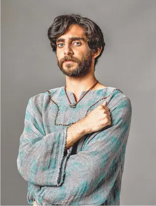

HISTÓRIA
The Chosen é uma série de televisão cristã estadunidense de drama histórico baseada na vida de Jesus. Foi criada, dirigida e co-escrita por Dallas Jenkins. É a primeira série com múltiplas temporadas sobre a vida de Jesus. Ambientada principalmente na Judeia e na Galileia no século I, a série centra-se em Jesus pela perscpectiva das diferentes pessoas que o conheceram, seguiram ou interagiram de alguma forma com ele. A série é estrelada por Jonathan Roumie como Jesus, ao lado de Shahar Isaac, Elizabeth Tabish, Paras Patel, Noah James e George H. Xanthis.
Depois que Jenkins observou que nunca houve um retrato de Jesus baseado em episódios com várias temporadas que pudesse ser "maratonada" como programas em mídias de streaming como o Netflix, ele decidiu criar a série em parceria com a Angel Studios, anteriormente VidAngel. Com a intenção de diferir das representações anteriores de Jesus, ele elaborou uma história que se concentrava mais nas pessoas que encontraram Jesus e o viram através de seus olhos. Ele afirmou em entrevistas que procurou apresentar Jesus de uma forma que fosse mais "pessoal, íntima, imediata".


PERSONAENS PRINCIPAIS
| FOTO | PERSONAGEM | ATOR |
|---|---|---|
 |
Jesus Cristo | Jonathan Roumie |
 |
Simão Pedro | Shahar Isaac |
 |
Thiaguinho | Jordan Ross |
 |
João | George H. Xanthis |
 |
André | Noah James |
 |
Filipe | Yoshi Barrigas |
|  | Judas Iscariotes | Luke Dimyan |
 |
Mateus | Paras Patel |
 |
Tomé | Joey Vahedi |
 |
Judas Tadeu | Giavani Cairo |
 |
Natanael | Austin Reed Alleman |
 |
Simão Zelote | Alaa Safi |